Shiroishishi
Shiroishishi · Miyagi
Shiroishishi
Highlighted on the Miyagi map.
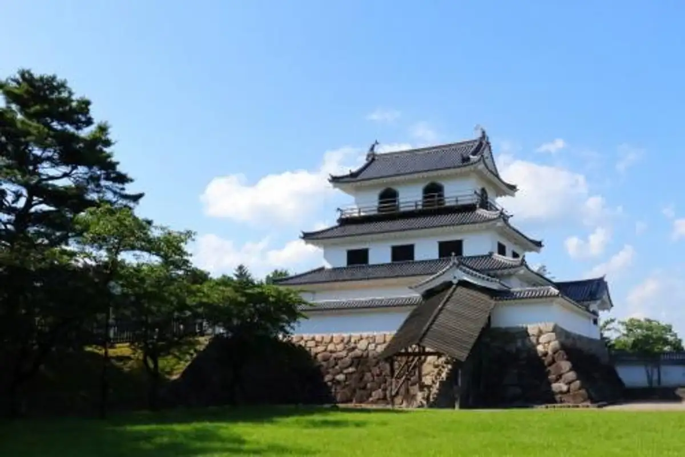
Stay
パシフィックホテル白石
Pashifikkuhoteru Shiroishi
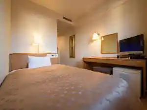
ベネシアンホテル白石蔵王
Beneshianhoteru Shiroishi Zaou
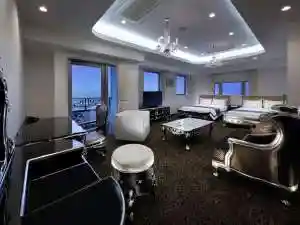
バケーションレンタルKITOWA
Bakeeshonrentaru Kitowa
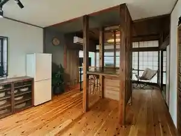
THE YUKAWA 一條支店
THE YUKAWA
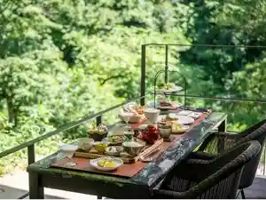
四季の宿 みちのく庵
Shiki No Yado Michinoku Iori
鎌先温泉 すゞきや旅館（すずきや）
鎌先温泉 すゞきや旅館(すずきや)
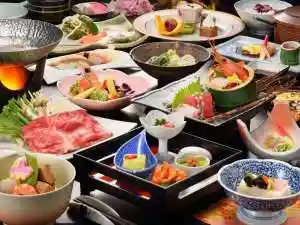
最上屋旅館
Saijou Ya Ryokan
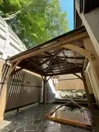
朝夕個室料亭で＜森の晩餐＞をいただく美食宿 時音の宿湯主一條
Asayuu Koshitsu Ryoutei De ＜ Mori No Bansan ＞ Woitadaku Bishoku Yado Toki Oto No Yado Yu Shuichi Jou
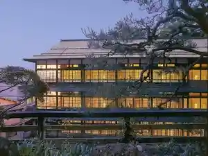
ホテルいづみや
Hotel Izumiya
Dining
湯主一條
Yu Shuichi Jou
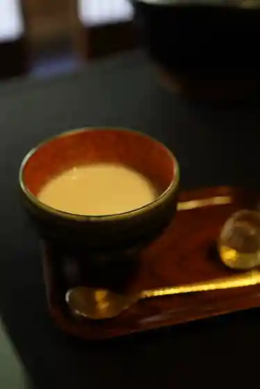
中華亭
Chuuka Tei
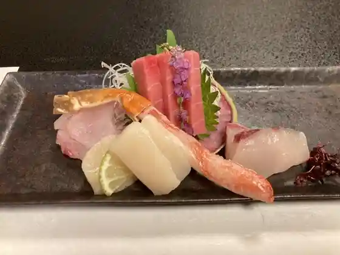
みちのく庵
Michinoku Iori
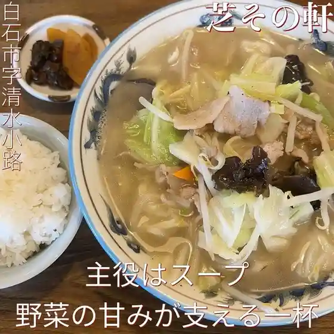
芝その軒
Shiba Sono Ken
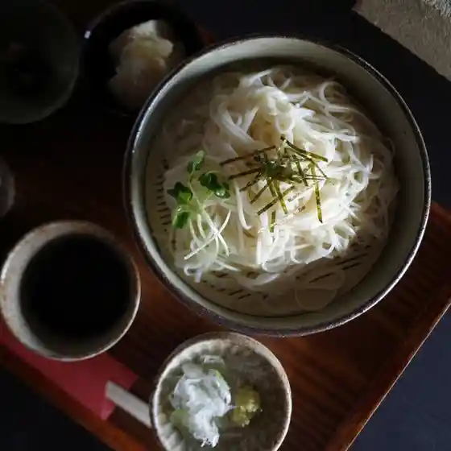
白石温麺 つりがね庵
Shiroishi Onmyon Tsurigane Iori
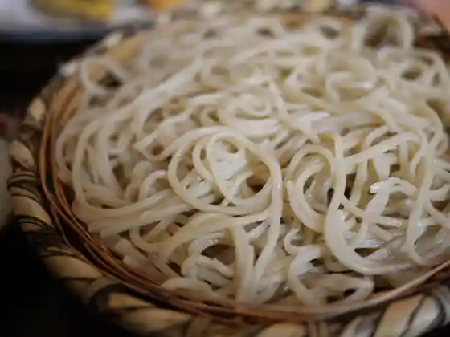
むらかみ
Murakami
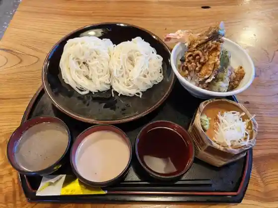
元祖白石うーめん処なかじま
Ganso Shiroishi Uumen Tokoro Nakajima
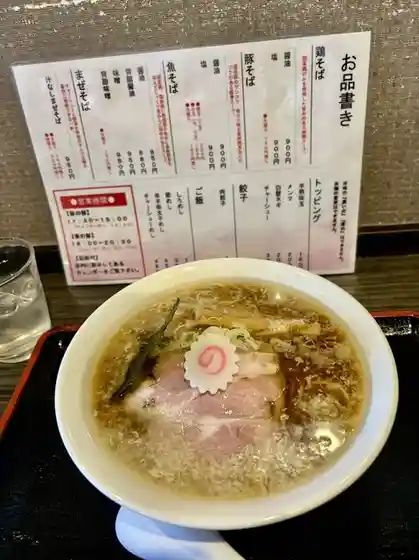
麺家 九十九
Men Ie Tsukumo
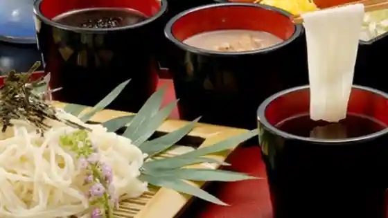
やまぶき亭
Yamabuki Tei
讃岐づくり本格手打ちうどん 麦の季
Sanuki Zukuri Honkaku Teuchi Chiudon Mugi No Ki
甘味堂 くさかもちや
Amami Dou Kusakamochiya
中国飯屋 金五郎
Chuugoku Meshiya Kingorou
牧場カフェ 醍醐
Bokujou Kafe Daigo
日本料理この花(ベネシアンホテル白石蔵王)
Nihonryouri Kono Hana ( Beneshianhoteru Shiroishi Zaou )
みのりキッチン
Minori Kitchin
長寿庵
Chouju Iori
清治庵
Seiji Iori
都屋本店
Miyako Ya Honten
和食処やまと
Washoku Tokoro Yamato
柳屋菓子店
Yanagi Ya Kashi Mise
仙加苑 白石バイパス本店
Sen Ka En Shiroishi Baipasu Honten
オールウェイズ ジョジョパン
Ooruueizu Jojopan
高甚 白石駅前本店
Taka Jin Shiroishi Ekimae Honten
蕎麦庵 かつら木
Soba Iori Katsura Ki
小原なごみ茶屋
Kohara Nagomi Chaya
関東家
Kantou Ie
一力庵
Ichiriki Iori
カフェSUNSUN小十郎
SUNSUN
Lover
Lover
キッチンオルト
Kitchin'oruto
太助寿司
Tasuke Sushi
粋
Sui
ポエム
Poemu
らぁめん うんじゃらげ
Raamen Unjarage
うどんの青山
Udonno Aoyama
コヤコーヒー
Koyakoohii
キーズカフェ 白石蔵王店
Kiizukafe Shiroishi Zaou Mise
福香亭 白石支店
Fuku Kaori Tei Shiroishi Shiten
焼肉千里馬 蔵王駅前店
Yakiniku Senri Uma Zaou Ekimae Mise
ミサワヤ
Misawaya
FRUTTA GELATO
FRUTTA GELATO
Cafe 洋燈
Cafe
trattoria & ber elmo
trattoria & ber elmo
最上屋旅館
Saijou Ya Ryokan
高甚 東庵店
Taka Jin Touan Mise
すゞきや旅館
すゞきや旅館
来来
Rairai
ルガノ
Rugano
Cafe 沢端
Cafe
お休み処 あたご茶屋
O Yasumi Tokoro Atago Chaya
おもしろいし市場
Omoshiroishi Shijou
白石城歴史探訪ミュージアム
Shiroishi Shiro Rekishi Tanbou Myuujiamu
ラーメンショップ 椿 越河店
Raamenshoppu Tsubaki Ekka Mise
お食事処 番や
O Shokuji Tokoro Ban Ya
ひまわり ヤマザワ白石北店
Himawari Yamazawa Shiroishi Kita Mise
居酒屋 ザモッズ
Izakaya Zamozzu
焼き菓子製作室 イロドリ
Yaki Kashi Seisaku Shitsu Irodori
シェノン
Shienon
やくせん
Yakusen
THE YUKAWA 一條支店
THE YUKAWA
東天閣
Touten Kaku
東
Higashi
ドルフィン
Dorufin
お食事 ゆっぽ亭
O Shokuji Yuppo Tei
山川屋菓子店
Yamakawa Ya Kashi Mise
白石城小十郎茶屋
Shiroishi Shiro Kojuurou Chaya
中華そば熊や
Chuuka Soba Kuma Ya
サンポーラン
Sanpooran
白泉堂
Hakusen Dou
ピッツェリア ペンギン村
Pittsueria Pengin Mura
COPAL みやぎ生協白石店
Copal Miyagi Seikyou Shiroishi Mise
馬車路
Basha Michi
Dining Kitchen BUONO
Dining Kitchen BUONO
紅茶と珈琲のお店 ｆ,
Koucha To Koohii Noo Mise F ,
ホテル いづみや
Hotel Izumiya
はたけなか製麺
Hatakenaka Seimen
ベネシアンホテル 白石蔵王
Beneshianhoteru Shiroishi Zaou
すすきの一番
Susukino Ichiban
ラーメン・焼肉ナナ
ラーメン・焼肉ナナ
竹鶏ファーム
Take Niwatori Faamu
小料理ささき
Koryouri Sasaki
炭火焼き 呵呵大笑
Sumibi Yaki Kaka Taishou
蔵王酒造展示館
Zaou Shuzou Tenjikan
お食事処あがつま
O Shokuji Tokoro Agatsuma
ぐりーんぐらす
Guriingurasu
居楽酒屋 吉や
Kyo Rakushu Ya Kichi Ya
鮨敏
Sushi Toshi
藤よし
Fuji Yoshi
レストランソレイユ
Resutoransoreiyu
しのぶ
Shinobu
えびす
Ebisu
En Cafe
En Cafe
ラーメン金龍
Raamen Kinryuu
白石スキー場 レストラン
Shiroishi Sukii Ba Resutoran
宮城蔵王 キツネ村
Miyagizaou Kitsune Mura
蔵王高原フーズ 直売所
Zaou Kougen Fuuzu Chokubai Tokoro
政寿司
Masatoshi Tsukasa
味処和が家
Ajidokoro Wa Ga Ie
わんこの家
Wankono Ie
自家焙煎珈琲工房 飛行島
Jika Baisen Koohii Koubou Hikou Shima
セブンイレブン 白石馬場前店
Sebun'irebun Shiroishi Baba Mae Mise
クレープの店ちろりん村
Kureepu No Mise Chirorin Mura
釣り堀カフェクローバー
Tsuri Hori Kafekuroobaa
イザック H&J
H&J
昭和食堂
Shouwa Shokudo
Kitchen 煙
Kitchen
ANGLE COFFEE HUB
ANGLE COFFEE HUB
ニューデイズ 白石
Nyuudeizu Shiroishi
どさん子 白石バイパス店
Dosan Ko Shiroishi Baipasu Mise
ココス 白石店
Kokosu Shiroishi Mise
菓匠三全 白石本町店
Kashousanzen Shiroishi Honchou Mise
ガスト 白石店
Gasuto Shiroishi Mise
吉野家 ４号線白石店
Yoshinoya 4 Gousen Shiroishi Mise
マクドナルド ４号線白石店
Makudonarudo 4 Gousen Shiroishi Mise
ニューデイズ 白石蔵王
Nyuudeizu Shiroishi Zaou
馬上かまぼこ店 白石店
Bajou Kamaboko Mise Shiroishi Mise
COOP 白石店
COOP
しんしん亭
Shinshin Tei
かんしょう
Kanshou
旬菜旬肴 天花
Jun Na Jun Sakana Tenka
ダイニング バー トライアングル
Dainingu Baa Toraianguru
しろいしほっこりにっこりくらぶ
Shiroishihokkorinikkorikurabu
(有)カネマン魚店
( Ari ) Kaneman Sakana Mise
白樺
Shirakaba
くるま
Kuruma
カフェ・ミルトン
カフェ・ミルトン
星乃家
Hoshino Ie
ごんとそらcafe
cafe
停車場
Teisha Ba
幸楽苑 白石店
Kouraku En Shiroishi Mise
花のれん
Hana Noren
個亭 この花
Ko Tei Kono Hana
和み処 ももの木
Nagomi Tokoro Momono Ki
スズキミート
Suzukimiito
大江惣菜店
Ooe Souzai Mise
姉妹
Shimai
ヨークベニマル 白石店
Yookubenimaru Shiroishi Mise
風と大地のおかず家
Kaze To Daichi Nookazu Ie
ロビーラウンジ都路里
Robiiraunji Miyakoji Sato
肉のとみおか
Niku Notomioka
ファミリーマート 白石駅前店
Famiriimaato Shiroishi Ekimae Mise
個室・一人焼肉 煉
個室・一人焼肉 煉
木地ひきのいっぷく屋
Kiji Hikinoippuku Ya
メーメークラブ門前茶屋
Meemeekurabu Monzen Chaya
レストラン チャーリー
Resutoran Chaarii
平禄寿司 宮城白石店
Taira Roku Sushi Miyagi Shiroishi Mise
酒菜の隠れ家 月あかり 白石店
Shusai No Kakure Ie Gatsu Akari Shiroishi Mise
味のまるまつ 白石店
Aji Nomarumatsu Shiroishi Mise
モンペリエ ヨークベニマル白石店
Monperie Yookubenimaru Shiroishi Mise
白石興産
Shiroishi Kousan
イタリアン・トマト カラオケパーク 白石蔵王店
イタリアン・トマト カラオケパーク 白石蔵王店
幸楽苑のからあげ家 白石店
Kouraku En Nokaraage Ie Shiroishi Mise
ほっともっと 白石東町店
Hottomotto Shiroishi Higashichou Mise
沖縄
Okinawa
パン工房 アンジュール みやぎ生協白石店
Pan Koubou Anjuuru Miyagi Seikyou Shiroishi Mise
やきとり大吉 ＪＲ白石店
Yakitori Daikichi J R Shiroishi Mise
ハンアリ
Han'ari
つつみ屋 白石店
Tsutsumi Ya Shiroishi Mise
めん太郎 白石店
Men Tarou Shiroishi Mise
不二家 ヨークベニマル白石店
Fujiya Yookubenimaru Shiroishi Mise
むらかみさんち
Murakamisanchi
鳥勝
Tori Kachi
天然記念物 材木岩公園売店
Tennenkinenbutsu Zaimoku Iwa Kouen Baiten
河寿し
Kawa Hisashi Shi
まるほ
Maruho
小原いきいき直売所
Kohara Ikiiki Chokubai Tokoro
きく文
Kiku Bun
アヴィ カレーバー
Avi Kareebaa
丸秀酒店
Maru Shuu Saketen
ヤマザワ 白石北店
Yamazawa Shiroishi Kita Mise
三宅精肉店
Miyake Seinikuten
POINT NEMO
POINT NEMO
セブンイレブン 白石大平店
Sebun'irebun Shiroishi Oohira Mise
ヤマザキショップ 刈田綜合病院店
Yamazakishoppu Karida Sougou Byouin Mise
ギャラリー美器
Gyararii Bi Utsuwa
サクラ
Sakura
カフェ レーヴ
Kafe Reevu
不二家 ヤマザワ白石北店
Fujiya Yamazawa Shiroishi Kita Mise
LAWSON 白石大平店
LAWSON
角万
Kaku Man
森巳酒店
Mori Shi Saketen
セラビ 白石店
Serabi Shiroishi Mise
杏山
Anzu Yama
セブンイレブン 白石城北町店
Sebun'irebun Shiroishi Jouhoku Machi Mise
藤崎 白石店
Fujisaki Shiroishi Mise
都寿し
Miyako Hisashi Shi
ミニストップ 白石羽山店
Minisutoppu Shiroishi Hayama Mise
Okey Burger
Okey Burger
歩
Ho
多憩
Ta Kei
バーバ工愛市
Baaba Kou Aiichi
セブンイレブン 白石工業高校前店
Sebun'irebun Shiroishi Kougyoukoukou Mae Mise
セブンイレブン 白石半沢屋敷前店
Sebun'irebun Shiroishi Hanzawa Yashiki Mae Mise
株主会社半田食品 刈田綜合病院店
Kabunushi Kaisha Handa Shokuhin Karida Sougou Byouin Mise
ファミリーマート 白石沢端店
Famiriimaato Shiroishi Sawa Haji Mise
ミニストップ 白石半沢屋敷前店
Minisutoppu Shiroishi Hanzawa Yashiki Mae Mise
セブンイレブン 白石蔵王駅前店
Sebun'irebun Shiroishi Zaou Ekimae Mise
小十郎の郷
Kojuurou No Sato
株式会社きちみ製麺 売店
Kabushikigaisha Kichimi Seimen Baiten
中華 味彩
Chuuka Aji Sai
小室わさび屋
Komuro Wasabi Ya
松田製粉 直売所
Matsuda Seifun Chokubai Tokoro
工房 こひな
Koubou Kohina
大沼焼ふ店
Oonuma Yaki Fu Mise
ファミリーマート
Famiriimaato
LAWSON 白石鷹巣東店
LAWSON
マリア
Maria
あさひ
Asahi
麺面彩
Men Men Sai
居酒屋とんとん
Izakaya Tonton
美由紀
Miyuki
フレスコキクチ 白石店
Furesukokikuchi Shiroishi Mise
誠屋
Makoto Ya
居酒屋なつめ
Izakaya Natsume
小十郎プラザ
Kojuurou Puraza
旅館しんゆ
Ryokan Shinyu
Hikarian
Hikarian
Handmade Soba Murakani
Handmade Soba Murakani
Japanese Restaurant Yamato
Japanese Restaurant Yamato
Umenbansho
Umenbansho
Lugano
Lugano
Kamasaki Onsen Mogamiya Ryokan
Kamasaki Onsen Mogamiya Ryokan
Chinese Restaurant Kin Goro
Chinese Restaurant Kin Goro
Sobaan Katsuragi
Sobaan Katsuragi
Nakajima JRTohoku Line Shiroishi Ekimae
Nakajima JRTohoku Line Shiroishi Ekimae
Men Yatsukumo
Men Yatsukumo
Gusto Shiraishi
Gusto Shiraishi
Chinatei
Chinatei
Marumatsu Shiraishi
Marumatsu Shiraishi
Totenkaku
Totenkaku
Ramen Yakiniku Nana
Ramen Yakiniku Nana
Chojuan
Chojuan
Ramen Kinryu
Ramen Kinryu
Xian toshomen
Xian toshomen
Ramen Unjarage
Ramen Unjarage
Ashigaru Manju Shiraishi Bypass Main Store
Ashigaru Manju Shiraishi Bypass Main Store
Adachiya Soba
Adachiya Soba
Heirokuzushi Shiroishi
Heirokuzushi Shiroishi
Tokinokira
Tokinokira
Restaurant in Shiroishijo Rekishitambo Museum
Restaurant in Shiroishijo Rekishitambo Museum
Coco s Japan
Coco s Japan
Shunsai No Kakurega Tsukiakari Shiroishi
Shunsai No Kakurega Tsukiakari Shiroishi
Ryutei
Ryutei
Miraku
Miraku
Ryu Ryu
Ryu Ryu
Genjibotaru Rice Cracker
Genjibotaru Rice Cracker
Restaurant Zaotei
Restaurant Zaotei
Ramen Ichimaru
Ramen Ichimaru
Karaoke Shofukutei Crayon Shiraishi
Karaoke Shofukutei Crayon Shiraishi
Ramen Shop Saikawa
Ramen Shop Saikawa
Kawazushi
Kawazushi
Azuma Shokudo
Azuma Shokudo
Magotaro Chaya
Magotaro Chaya
Kameya
Kameya
Yokoyama Sembei
Yokoyama Sembei
Tabe Dokoro Tsu
Tabe Dokoro Tsu
Ogami
Ogami
Kakurega Restaurant Komorebi
Kakurega Restaurant Komorebi
Ramen Shop Kosugo
Ramen Shop Kosugo
Taiko
Taiko
Obara Nagomi Chaya
Obara Nagomi Chaya
Multi Purpose Hall Hana Nehana
Multi Purpose Hall Hana Nehana
Agatsuma Dining
Agatsuma Dining
La Hetraie
La Hetraie
Rui Dininig Room
Rui Dininig Room
Otafuku
Otafuku
Daien
Daien
Kyozan
Kyozan
Sushi Restaurant Miyako Sushi
Sushi Restaurant Miyako Sushi
Masazushi
Masazushi
Dateno Karaageya
Dateno Karaageya
Tavern Zamozzu
Tavern Zamozzu
Orto
Orto
Restaurant Hana
Restaurant Hana
Koryori Tomozuna Pure Spot Utage
Koryori Tomozuna Pure Spot Utage
Tamako
Tamako
Ayumi
Ayumi
Tokiwaya Shiroishi
Tokiwaya Shiroishi
Kappo Aoba
Kappo Aoba
Koito
Koito
Kojuro
Kojuro
Kame House
Kame House
Restaurant Suzuki Meat
Restaurant Suzuki Meat
Onigiri No Sato
Onigiri No Sato
Pizzeria Penguin Village
Pizzeria Penguin Village
Cafe Taco Salon
Cafe Taco Salon
Bunch Come Easy Tea Room Dining Options
Bunch Come Easy Tea Room Dining Options
Akitaya
Akitaya
Murataya Confectionery
Murataya Confectionery
Gyokusendo Ekimae
Gyokusendo Ekimae
Takajin Confectionery Serabi
Takajin Confectionery Serabi
Farine Serabi Shiraishi
Farine Serabi Shiraishi
Mii
Mii
Shankoen
Shankoen
Tsukiakari Shiroishi Ekimae
Tsukiakari Shiroishi Ekimae
L atelier de Fuku
L atelier de Fuku
Cantera
Cantera
Izakaya Natsume
Izakaya Natsume
Shiba Sono Branch
Shiba Sono Branch
Eagles
Eagles
Onsen
Kamasaki Onsen
Historic hot-spring district in Fukuoka Kuramoto known for mineral-rich baths
Mogamiya Ryokan Baths
Guest and day-use baths at Mogamiya in Kamasaki Onsen
Shop
Omoshiroishi Market
Produce and specialty market inside Shiroishi Sun Park
Kichimi Noodle Shop
Maker of Shiroishi warm noodles in Honmachi
Sights
Shiroishi Castle
Reconstructed castle keep and stone walls in Masuoka Park
Zaimokuiwa Cliffs
Dramatic columnar rock cliffs in the Obara area
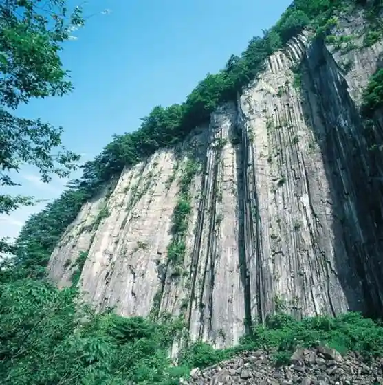
Yajiro Kokeshi Village
Craft village for Yajiro-style kokeshi dolls
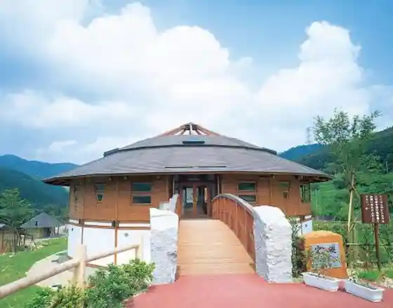
Samurai Residences
Preserved samurai-house streetscape in Nishi-Masuoka
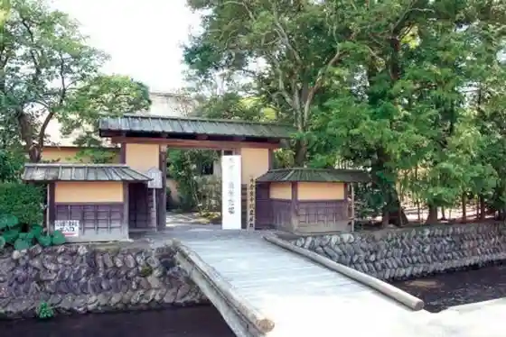
Shiroishi Castle History Museum
History museum beside the castle grounds
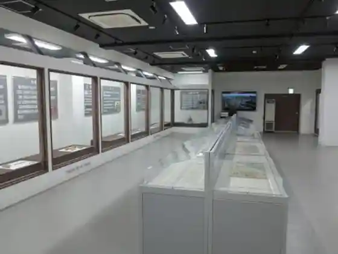
Kojuro Kids Land
Children’s play facility at Shiroishi Sun Park
Miyagi Zao Shiroishi Ski Area
Local ski area on the Zao foothills
Be a SAMURAI Experience
Samurai-costume and experience program in Shiroishi
Matsuda Flour Mill
Local flour mill in Fukuoka Kuramoto
Splash Land Shiroishi
Leisure pool and spa complex in Obara
Zaimokuiwa Park
Park around the Zaimokuiwa rock formations
Skunk Cabbage & Doudan Forest
Seasonal wetland and azalea forest walk
Katakura Family Mausoleum
Historic mausoleum of the Katakura clan
Obara Gorge
River gorge scenery in the Obara district
Masuoka Park Cherry Blossoms
Spring cherry blossoms around Masuoka Park and the castle